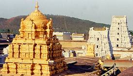

|
TIRUMALA TEMPLE
The ancient and sacred temple of Sri Venkateswara is located on the seventh peak, Venkatachala (Venkata Hill) of the Tirupati Hill, and lies on the southern banks of Sri Swami Pushkarini. It is by the Lord’s presidency over Venkatachala, that He has received the appellation, Venkateswara (Lord of the Venkata Hill). He is also called the Lord of the Seven Hills. The temple of Sri Venkateswara has acquired unique sanctity in Indian religious lore. The Sastras, Puranas, Sthala Mahatyams and Alwar hymns unequivocally declare that, in the Kali Yuga, one can attain mukti, only by worshipping Venkata Nayaka or Sri Venkateswara. The benefits acquired by a piligrimage to Venkatachala are mentioned in the Rig Veda and Asthadasa Puranas. In these epics, Sri Venkateswara is described as the great bestowed of boons. There are several legends associated with the manifestation of the Lord at Tirumala. The temple has its origins in Vaishnavism, an ancient sect which advocates the principles of equality and love, and prohibits animal sacrifice. The sanctum sanctorum which houses the awe-inspiring idol of the Lord of the Seven Hills is situated in the main temple complex of Tirumala. There is ample literary and epigraphic testimony to the antiquity of the temple of Lord Sri Venkateswara. All the great dynasties of rulers of the southern peninsula have paid homage to Lord Sri Venkateswara in this ancient shrine. The Pallavas of Kancheepuram (9th century AD), the Cholas of Thanjavur (a century later), the Pandyas of Madurai, and the kings and chieftains of Vijayanagar (14th - 15th century AD) were devotees of the Lord and they competed with one another in endowing the temple with rich offerings and contributions. It was during the rule of the Vijayanagar dynasty that the contributions to the temple increased. Sri Krishnadevaraya had statues of himself and his consorts installed at the portals of the temple, and these statues can be seen to this day. There is also a statue of Venkatapati Raya in the main temple.
|